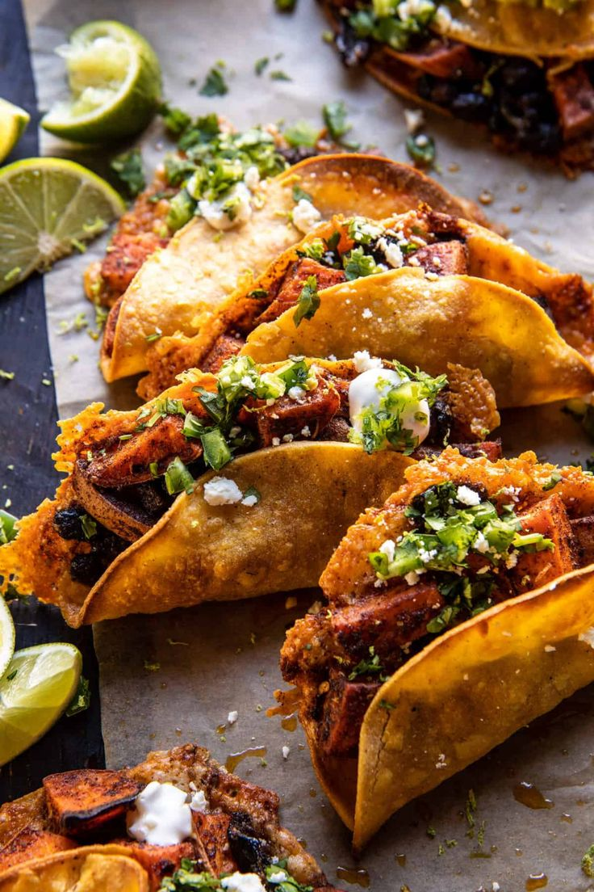

TACOS
Home

Birria tacos
This birria tacos recipe is origined in Guatemala as an alternative to the Mexican birria tacos
- Birria meat
- Onion
- Mozzarela cheese
- Tortillas
- Tomatoes
- Lemons
Steps:
- Chop the onions and tomatoes
- Grill some tortillas with mozzarella cheese
- Slice some lemons for the juice
- Put the Birria meat on the grilled tortillas and warm them a little
- Build your taco as you like with the lemon juice and chopped onions and tomatoes